しんけん工房
無塩せきベーコン・
無塩せき布巻ロースハム
安心・安全と味へのこだわり「無塩せき」
厳選素材を職人が手がけた逸品
ここが「極み」
- 99％、消費者の立場を自覚して製造
- 第三群の食品添加物（着色料、保存料、発色料、増粘多糖類など）を使わない。
- 庄内豚肉、月山産山ぶどうワインなどの厳選素材を使用
「無塩せき」によるハム・ソーセージの専門ブランド「しんけん工房」。この「しんけん」というネーミングには、ハム類を総称するドイツ語「Schinken（シンケン）」と、無添加の製品作りに「真剣」に取り組む姿勢の両方の意味が込められています。その徹底した理念は、国際的な食品と料理の研究家・磯部晶策氏による「原材料の厳選」「加工段階での純正」「時代環境に曲げられない一徹な姿勢」「みずから99％消費者の立場の自覚」という四原則に基づいています。
第三群の食品添加物（着色料、保存料、発色料、増粘多糖類など）を一切使わず、「最上川ファーム」産の庄内ＳＰＦ豚肉、月山産山ぶどうを原料にした山ぶどうワインなどを使用。伝統製法である乾塩法を用いて、ＪＡＳ認定の工場で製造される「安全で安心な本物の味」です。
そんな真剣さが伝わる、職人自慢の二品を今回はご用意しました。
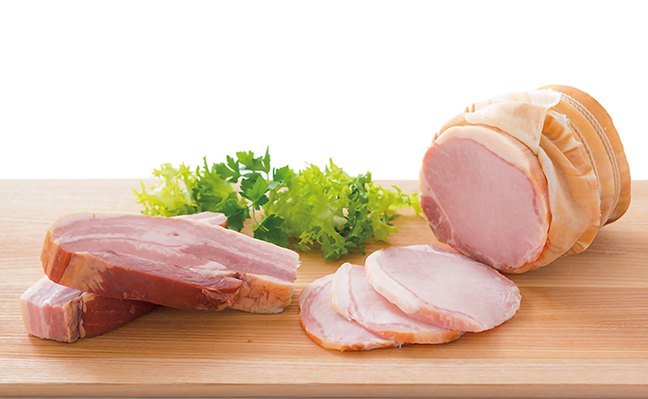
カリカリに焼きあげられるのが、誠実に作られたベーコンの証
ひとつめは、混じりっけなしのピュアな味わいと、きめ細やかな食感で大人気の「無塩せきベーコン」です。食塩に天然の岩塩を使い、ほかには香辛料と砂糖のみを使用。これらをバラ肉に丹念に肉にすりこみ、桜のチップで二晩かけてスモークします。増量剤などを一切使わず作られたベーコンは庄内豚本来の脂のおいしさが際立ち、なめらかでしっとりとした食感です。ベーコンステーキはもちろん、カリカリベーコンにしても香ばしいひとつ上の仕上がりを味わえます。
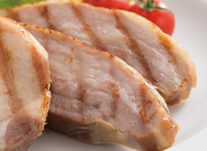
熟成した旨みが噛むほどに広がる本物のロースハム
もう一品は、熟練職人たちの技とこだわりによって生まれた「布巻ロースハム」です。こちらは、庄内豚のロースに食塩・砂糖・香辛料をすり込んで14日もの間じっくり熟成。隅々まで塩や香辛料が染み込み、アミノ酸の分解が進んで深い味わいになった豚肉を、
さらに一本一本を丁寧にさらし布でくるみ糸で巻き、昔ながらの直火式窯で一晩かけてスモークします。桜チップの豊潤な燻香、肉そのもののしっかりした食感、熟成によって引き出された旨みが、噛むほどにじわっと広がります。ぜひ、厚切りにしてステーキでお召しあがりいただきたい自信作です。
いずれも無塩せきで賞味期限が短いため、製品の開封後はラップフィルムで密着して包み、冷蔵庫で保存してください。
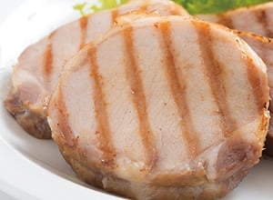
「無添加」の「無塩せき」へのこだわり
食の安心・安全。そして本物のハム・ベーコンの味わいの追求
「塩せき」とは肉に塩や発色剤（亜硝酸Na、硝酸K）を加える製法で、一般的に広くハム類の製造に使われています。発色剤を使わない場合は「無塩せき」と呼ばれます。 なぜ一般的なハムには発色剤が使われているのでしょうか？ それは、文字通りハムらしい色をつける発色作用のほかに、殺菌作用によって食中毒を予防したり、臭みを消すと同時におなじみのハムらしい香りをつけたり、防腐したりと実にさまざまな効果があるからです。
無添加の製品とは、第三群食品添加物つまり着色料、保存料、増粘多糖類、そして発色剤などの添加物を使わないものを指します。なかでも発色剤を使わない、つまり「無塩せき」でつくることが最も困難でした。世間では、無塩せき製品とうたいながらも味や安全性の問題を、添加物で補っていることがほとんどです。
「しんけん工房」は、健康に影響があると思われる添加物をすべて取り除き、安全でおいしく誠実な製品をつくることに徹底的にこだわる続けることで、「無塩せき」「無添加」という食の安心・安全と、本物のハム・ベーコンの味わい、そのどちらをも実現した価値あるブランドなのです。
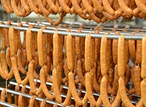
豚肉へのこだわり
クセがなくうまみたっぷりの庄内SPF豚肉を使用
ハムづくりの本場であるヨーロッパでは、土壌にB型ボツリヌス菌が含まれることが多いことから、細菌を抑制する発色剤の使用は当然です。日本の土壌ではボツリヌス菌への心配はほぼなく発色剤が不可欠な環境ではありませんが、使用しない場合はより慎重な菌への対策が求められます。
そのためには、やはり原料から見直すしかないと考えだしたころ、以前から付き合いのあった「最上川ファーム」から「庄内SPF豚肉」が出荷されるようになりました。これが「しんけん工房」の目指す製品づくりにはぴったりの豚肉だったのです。
SPFとはSpecific Pathogen Freeの略で「特定病原微生物を持たない」という意味です。無菌豚ではありませんが、発色剤などの添加物によってボツリヌス菌等を抑える必要がないという特長があります。
しかも、飼育期間は5.5ヶ月と一般的な食用豚よりも1割ほど短いこともあり、発色剤の防臭作用も必要としないほどクセが少なく、肉質も子豚に近いほど柔らかです。
「食品は地元で採れたものを地元で消費するのが本来のかたちであり、文化の始まりでもあるはず」という考えのもと、「しんけん工房」では、その原料に100％地元山形の「庄内SPF豚肉」を使用しています。
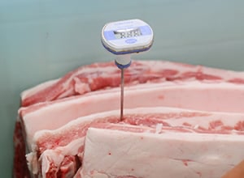
深みある味わいへのこだわり
豊かな風味を与える、霊峰月山の山葡萄ワイン
無添加ハムづくりでは、ワインも大きな役割を果たしています。「しんけん工房」の製品づくりに使われているのは、山形の「山ぶどうワイン」。
ワイナリーが位置するのは、山形県鶴岡市。霊峰月山を主峰にする出羽三山・朝日連峰に囲まれた美しい山里のなかにあります。地元では昔から山林原野に自生する山ぶどうで「どぶろく」をつくって愛飲していました。やがて「山ぶどうで正式に“ワイン”を醸造しよう」という試みが始まり、昭和55（1980）年ついに「月山ワイン」が誕生しました。当初は自生する山ぶどうを使用していましたが、30年以上も栽培管理を徹底した結果、糖度18度以上もめずらしくない品種となっています。
現在「しんけん工房」で使われているのは「ヤマ・ソーヴィニヨン」のワイン。山ぶどうとカベルネ・ソーヴィニヨン種を掛けあわせて1990年に生まれた国産新種です。高い糖度と色づきの良さから生まれたワインは香り高く、山形山ぶどうらしいキレの良い酸味を併せ持っています。ヤマ・ソーヴィニヨンの山ぶどうワインは「しんけん工房」のハムの味わいに深みを与える大事な存在です。
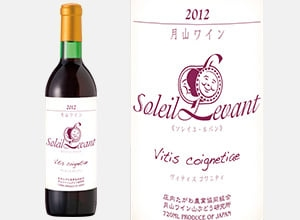
伝統製法を生かした日本の味へのこだわり
ドイツのマイスターの技を、日本人の舌にあう味に
「しんけん工房」では、理想とする無添加の製品づくりを実現させるために、、かねてからドイツ人マイスターに学んできた教えと、伝統ドイツ製法を改めて見直し、日本人の好みに合うよう”こだわり”の改良を加えることで、この豊かな味わいを生み出しました。
そのこだわりのひとつが「乾塩法」。塩や香辛料を肉に直接すり込んでいきます。現在はインジェクションといって注射針のようなもので肉の中に注入する製法が一般的ですが、職人が丹念に肉にすり込み、肉の中まで塩や香辛料をしっかりしみ込ませています。
熟成にもしっかりと時間をかけます。どの製品も低温の広々とした熟成庫で寝かせるのですが、とくにロースハムは約10日、スモークベーコンは30日と贅沢に時間をかけて熟成を待ちます。もちろん途中の熟成具合も丁寧にチェックしています。
もうひとつ重要な特徴が「直火式窯」です。伝統的なレンガ造りの直火式燻煙窯は、国内ではなかなか見かけないものだそう。なおドイツではもみの木など脂の多い針葉樹など刺激の強いスモークを使うことが多いのですが、「しんけん工房」では、やわらかな香りが日本人の好みに合う桜の木を使用してじっくり香り豊かにいぶしています。
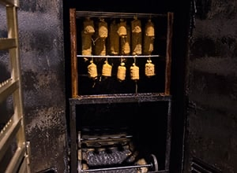
レビュー
開封から味わいまで、
美食の専門家が徹底レビュー！
やはりこれだけの種類とボリュームはうれしいですね。
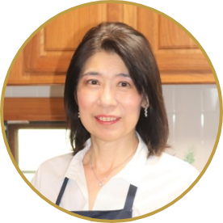
野菜ソムリエ川端寿美香 さん
-
箱自体にシンプルで愛らしいデザインが施されていて、 開けるのが楽しみです。
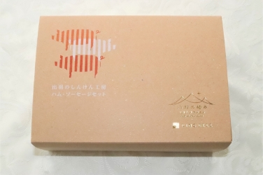
-
開けると5種類のハムとソーセージ！いろいろと食べ方のアイディアが膨らみます

-
厚めに切って、それだけでも十分に存在感のあるハムとなります。
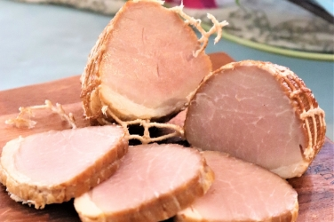
-
少し手を加えると、特別な日の一皿になります。 家族からも大好評でした。
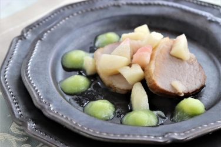
じっくりと熟成させた手間が存分に感じられるおいしさでした。
料理家成澤文子 さん
-
シンプルでスッキリとしたデザイン。右下の金の箔押しがプレミアム感を感じさせます。
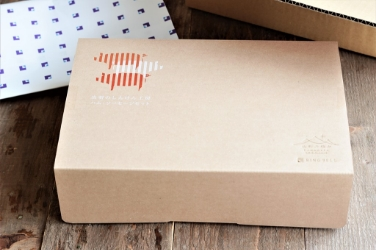
-
小分けされたパックが箱の中にぎっしり。期待を裏切りません。
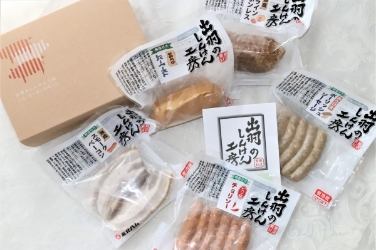
-
肉そのものの美味しさに加え、熟成の旨味と香りが鼻に抜けます。
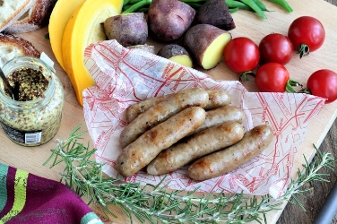
-
コクがあって後味よし。しっとりときめ細やかな食感もいいですね。
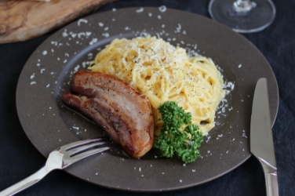